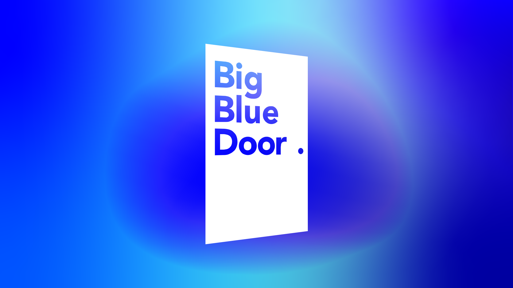
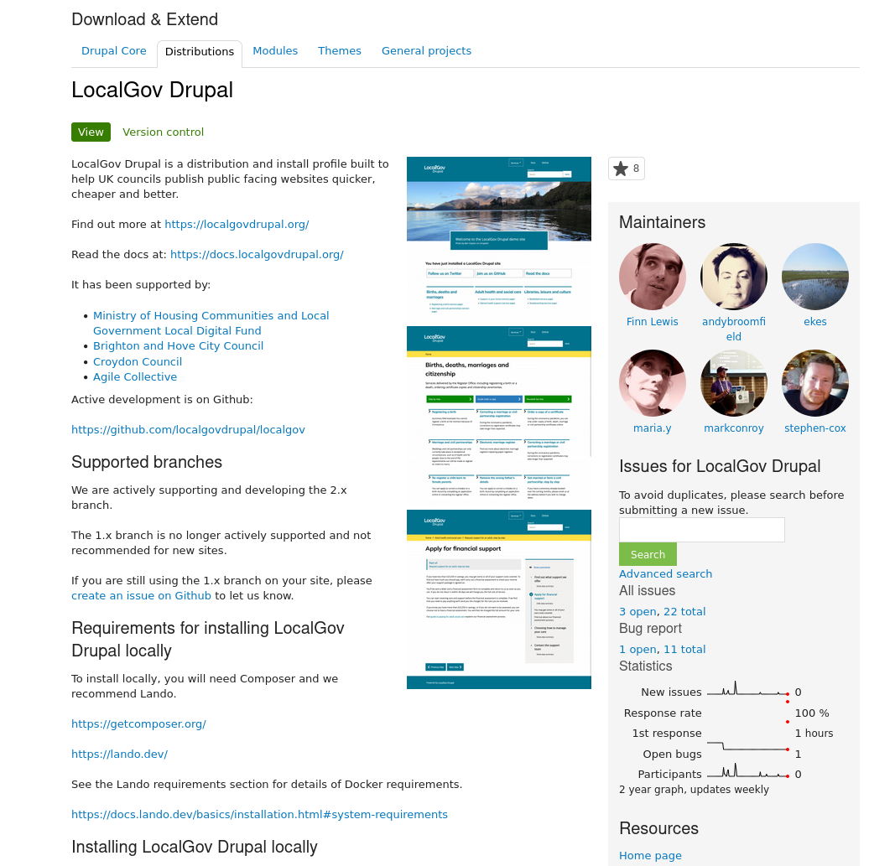
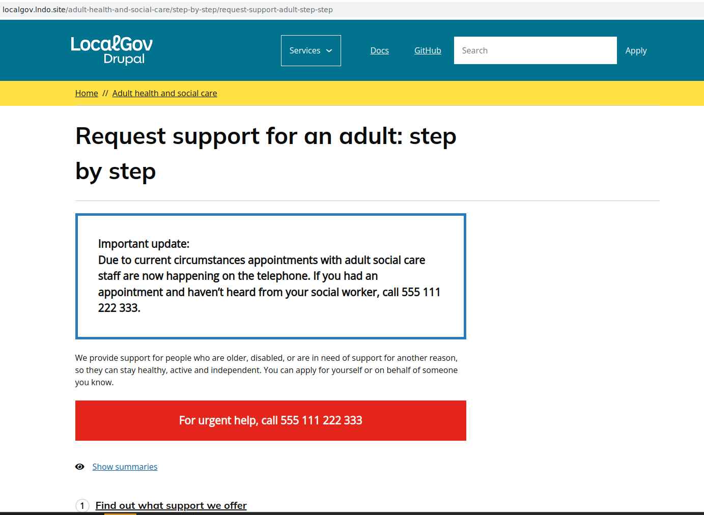
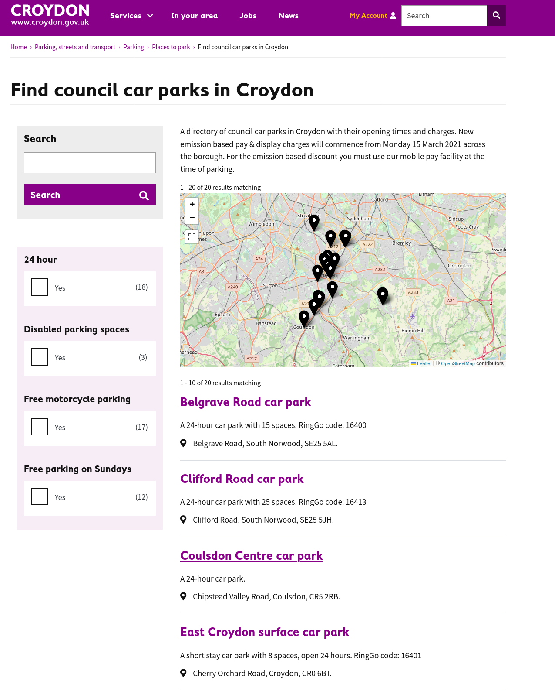

The publishing platform created
by councils for councils
@ekes
Councils
Suppliers

 (1).png)
Partners:
Distribution

Features
- Services
- Service status
- Alert banner
- Step by Step
- Guides
- Directories
- Events
- Geo
- Subsites
- Search
- News
- Blogs
- (Web)Forms
- Publications
- Integrations: OpenReferral, ModernGov, Care Quality Commission, Irish service catalogue...
- Theme starter kit
- Sa11y checking
Alert Banners
Step-by-Step

Directories


Geo

Microsites
Group & Domain

Demo

Domain Group
❌
Group Sites